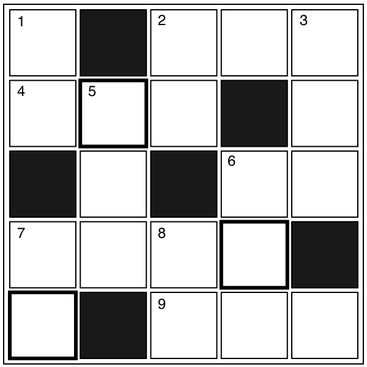

クロスワード
【→ PDF（印刷用）】

- タテのカギ
-
- １. 口の中で噛むお菓子。チューイング○○。
- ２. 人間には２本、動物には４本あるもの。
- ３. 目が悪い人がかけるもの。
- ５. 熱を加えること。
- ６. 黒い色の鳥。
- ７. 大豆、小豆など。「節分」の日にはこれをまく。
- ８. 黒くて大きな動物。ハチミツが好き？
- ヨコのカギ
-
- ２. 日本語学科には、マンガやこれが好きな人が多い。
- ４. 古い時代のこと。
- ６. 主任は『お○○』が大好き。
- ７. 夜になると外が○○○○になる。
- ９. カゼやインフルエンザの予防に使う。
【→ 解答を見る】